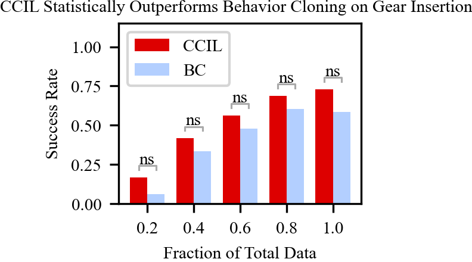
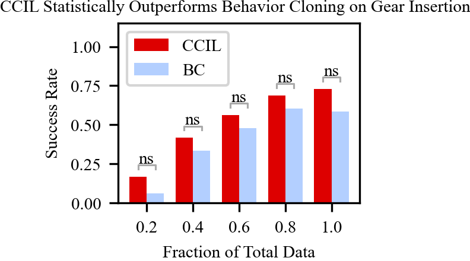
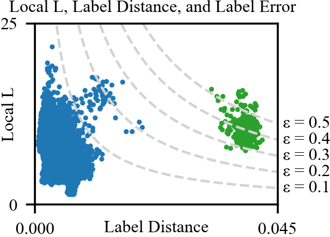
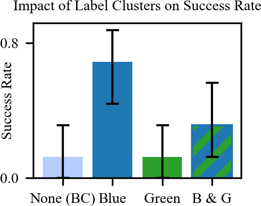
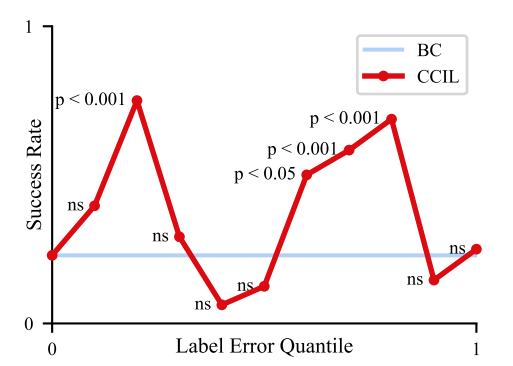
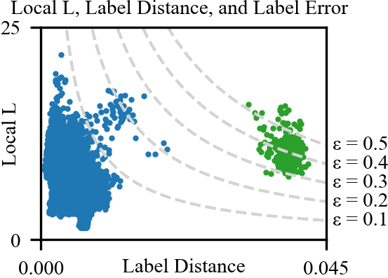
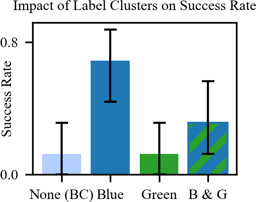
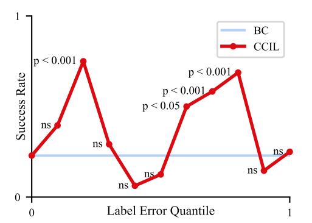

CCIL: Continuity-based Data Augmentation for Corrective Imitation Learning
CCIL: Continuity-based Data Augmentation for Corrective Imitation Learning
Data Efficient Behavior Cloning for Fine Manipulation via Continuity-based Corrective Labels
The Problem
Imitation learning in robotics demands extensive data coverage, often necessitating exhaustive datasets for successful behavior cloning. However, the reliance on expert demonstrations can lead to unpredictable behavior when encountering unfamiliar states due to various factors like sensor noise, stochastic environments, and covariate shift. Addressing this challenge involves augmenting training datasets, typically requiring interactive experts or knowledge of system invariances, which can be impractical and costly across diverse domains. Despite efforts to enhance robustness by generating corrective labels for data augmentation, the prevailing approach remains behavior cloning due to its simplicity and accessibility. To improve robustness, a technique leveraging the continuity inherent in dynamic systems is proposed, exploiting the fact that small changes in actions or states result in small changes in transitions, despite potential discontinuities in certain areas of the state space.
CCIL

Our approach focuses on synthesizing corrective labels to guide an agent encountering unfamiliar states back to the distribution of expert states, ensuring safety and familiarity. Leveraging local continuity in dynamic systems, we utilize a learned Lipschitz continuous dynamics model to navigate the agent from out-of-distribution states to in-distribution expert trajectories, facilitating the generation of corrective labels. Through our proposed algorithm, CCIL (Continuity-based Corrective labels for Imitation Learning), we learn dynamics models with local continuity from expert data and generate corrective labels to mitigate compounding errors in various robotic problems. Our contributions include formally defining corrective labels, introducing the practical CCIL algorithm, providing theoretical guarantees on model quality and label generation, and validating our approach across several tasks in multiple robotic domains through extensive simulation experiments, as well as in fine manipulation on a real robotic platform.
CCIL Successes and Failures
Results
Mujoco and Metaworld
| Mujoco | Metaworld | |||||||
|---|---|---|---|---|---|---|---|---|
| Hopper | Walker | Ant | Halfcheetah | CoffeePull | ButtonPress | CoffeePush | DrawerClose | |
| Expert | 3234.30 | 4592.30 | 3879.70 | 12135.00 | 4409.95 | 3895.82 | 4488.29 | 4329.34 |
| BC | 1983.98 ± 672.66 | 1922.55 ± 1410.09 | 2965.20 ± 202.71 | 1798.98 ± 791.89 | 3552.59 ± 233.41 | 3693.02 ± 104.99 | 1288.19 ± 746.37 | 3247.06 ± 468.73 |
| MOReL | 152.19 ± 34.12 | 70.27 ± 3.59 | 1000.77 ± 15.21 | -2.24 ± 0.02 | 18.78 ± 0.09 | 14.85 ± 17.08 | 18.66 ± 0.02 | 1222.23 ± 1241.47 |
| MILO | 566.98 ± 100.32 | 526.72 ± 127.99 | 1006.53 ± 160.43 | 151.08 ± 117.06 | 232.49 ± 110.44 | 986.46 ± 105.79 | 230.62 ± 19.37 | 4621.11 ± 39.68 |
| NoiseBC | 1563.56 ± 1012.02 | 2893.21 ± 1076.89 | 3776.65 ± 442.13 | 2044.24 ± 291.59 | 3072.86 ± 785.91 | 3663.44 ± 63.10 | 2551.11 ± 857.79 | 4226.71 ± 18.90 |
| CCIL | 2631.25 ± 303.86 | 3538.48 ± 573.23 | 3338.35 ± 474.17 | 8893.81 ± 472.70 | 4168.46 ± 192.98 | 3775.22 ±91.24 | 2484.19 ± 976.03 | 4145.45 ± 76.23 |
Drone
| Method | Hover | Circle | FlyThrough |
|---|---|---|---|
| Expert | -1104 | -10 | -4351 |
| BC | -1.08E8 | -9.56E7 | -1.06E8 |
| MOReL | -1.25E8 | -1.24E8 | -1.25E8 |
| MILO | -1.26E8 | -1.25E8 | -1.25E8 |
| NoiseBC | -1.13E8 | -9.88E7 | -1.07E8 |
| CCIL | -0.96E8 | -8.03E7 | -0.78E8 |
F1Tenth
| Method | Success Rate | Avg. Score |
|---|---|---|
| Expert | 100.0% | 1.00 |
| BC | 31.9% | 0.58 ± 0.25 |
| MOReL | 0.0% | 0.001 ± 0.001 |
| MILO | 0.0% | 0.21 ± 0.003 |
| NoiseBC | 39.3% | 0.62 ± 0.28 |
| CCIL | 56.4% | 0.75 ± 0.25 |
Real Robot
 


 






BibTeX
@misc{ke2023ccil,
title={CCIL: Continuity-based Data Augmentation for Corrective Imitation Learning},
author={Liyiming Ke and Yunchu Zhang and Abhay Deshpande and Siddhartha Srinivasa and Abhishek Gupta},
year={2023},
eprint={2310.12972},
archivePrefix={arXiv},
primaryClass={cs.RO}
}